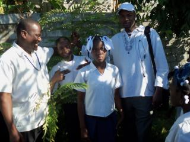
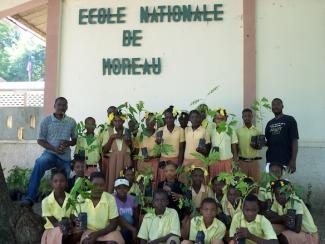

St. Marc (Haïti)
St. Marc (Haïti): Terre des jeunes St. Marc (Haïti)
 Terre des Jeunes Saint-Marc a été officiellement lancée le 29 mai 2010 à l'Ecole Nationale de Sanon Derac
Terre des Jeunes Saint-Marc a été officiellement lancée le 29 mai 2010 à l'Ecole Nationale de Sanon Derac
Suite à plusieurs rencontres entre des jeunes et des professionnels à Saint-Marc, une ville située à 54 km des Gonaïves, au sujet de l'élargissement du réseau de Terre des jeunes au pays, c'est avec joie que nous annonçons la création d'une nouvelle antenne de TDJ en Haïti.
CONTACT PRINCIPAL:
Rodrigue Laurent
Responsable, Tdj Saint-Marc
E-mail ; Rodlurentt@yahoo.fr
Tel : 509 37068728
La presidente Jaqueline Billon, jaquelinnebillon@yahoo.fr
Le responsable communication Jean Micado Meres, mjmicado@yahoo.fr
Gonaïves, Haïti, St. Marc (Haïti): Terre des jeunes Gonaïves en visite à TDJ Saint-Marc


{kind=link}
Terre des Jeunes Saint Marc et Gonaïves ont eu le plaisir se rejoindre ce vendredi 15 septembre 2012 en Frère dans l’air de l’exécution d’un projet conduit de Terre des Jeunes de Saint-Marc, où 15000 arbres seront bientôt plantés dans plusieurs régions à proximités de Saint Marc.
Johnny et Joël , deux membres du mouvement de Terre des Jeunes Haïti depuis 14 ans, soit les plus anciens du pays porteur de cet idée, ont effectué cette visite dans le but de renforcer la solidarité des antennes de Terre des Jeune sur tout Haïti.
Des espèces d’arbres indigènes forestiers et fruitiers se trouvent actuelles bonne santé et attendent leurs la festivité des plantations qui aura lieu dans une couple de semaine dans la ville de Saint-Marc.
Il faut noter que les antennes de Terre des Jeunes dans le département de l’Artibonite ( Gros-morne, Saint-Marc et Gonaïves) ont déjà planté, dans les 5 années précédentes , environs 100 mille d’arbres avec taux de réussite allant jusqu’à 70%.
Joel
St. Marc (Haïti): PROJET EDUCATION ECOLOGIQUE


TERRE DES JEUNES DE SAINT-MARC a lancé son projet titré : Education Ecologique, production d’une pépinière, revalorisation des sources Nėgrièl et Gilbert de Terre des Jeunes le mercredi 18 juillet 2012 à Barbe l’une des localités de la 4e section de Saint-Marc.
Il était 9h30 du matin une foule regroupant des habitants de la 4e section se réunit pour participer au lancement OFFICIEL du projet en question en présence du représentant officiel du ministère de l’environnement Agronome Vital Absalon, le représentant de la MINUSTAH M. Rodrigue Laurent, représentant officiel de la 4e section communale M. Diderot Bathalien et divers notables de la dite section dont l’Agronome Lesly Marthely pour ne citer que cela.
Ce projet a été conçu suite aux constats de la dégradation de l’environnement de la section et une dévalorisation des cites touristiques. Ainsi, TERRE DES JEUNES SAINT-MARC a décidé d’apporter une certaine solution par la réalisation d’un tel projet qui vise a :
1. Faire une campagne d’éducation environnementale de la population en organisant une séance de formation à l’ intention de 100 planteurs et 350 élèves issus de 10 écoles de la 4e section
2. Produire d’une pépinière d’une capacité de 15000 plantules, en majorité des arbres fruitiers qui serviront ; d’une part, la protection par la population parce que ces arbres produiront des fruits qui serviraient de sources de revenus pour les habitants de la section et d’autre part, des arbres forestiers qui contribueront à protection des sols qui à chaque pluie charrue les terres arbres vers la ville de saint-Marc.Leer más
Gonaïves, Haïti, Gros-Morne (Haïti), Delmas, Haïti, St. Marc (Haïti), Léogâne, Haïti, TDJ Haïti/Ayiti, Québec, Port Margot, Haïti, MHOJERE (Haïti), Cayes-Jacmel, Haïti: En mémoire du séisme du 12 janvier 2010 en Haïti
Vous voulez ajouter votre message? Laissez un commentaire ici!
Les membres de toutes les antennes de TDJ de par le monde ont une pensée spéciale pour les membres des antennes haïtiennes de Terre des jeunes, leurs proches, et toute la population haïtienne. Nous soulignons spécialement le travail sans relâche des membres de TDJ et de la jeunesse haïtienne pour se relever de la difficile année 2010 qui leur a été imposée; les sections haïtiennes demeurent le fer de lance du mouvement transnational de Terre des jeunes, et une inspiration profonde pour nous tous.
Voici un message de TRAGELUS Wilson DG AJGR Gros-Morne (Haïti):
Puissent ces vœux, au-delà de chacun de nous et des nôtres, rejoindre notre pays meurtri !
Paix
Union
Des joies
Des espoirs
Amour.Succès
Des réalisations
RespectHarmonie
Santé et solidarité
Bonheur et humilité
ConfraternitéPureté
Amitié Sagesset pardon
égalitéLiberté et chance
Sincérité et .Fraternité
Équilibre foi, santé et dignitéBienveillance, force et bonté De la patience.
De la ténacité
Prospérité
Et santé
Cordialement et Bonne Année 2011 à toute l’équipe Terre des Jeunes,
Et ceci de nos collègues de Côte d'Ivoire, eux-mêmes aux prises avec une situation très difficile dans leur pays:
"En ce jour de commémoration du premier anniversaire du séïsme dee votre pays, j'aimerais très sincèrement vous apporter ma compassion, et l'appui moral à toutes les familles ayant perdus un membre chèr, de tous les membres de TERRE DES JEUNES Cöte d'Ivoire.
Ces évenements ne doivent pas être une fatalité mais un facteur de recherche au plus profond de vous de solution viables et durables pour les jours et années avenir.
Pour ce avenir, il nous incombes de gerer de façon efficiente nos ressources energetique certe, mais encore mieux, former les ressources humaines nécéssaires, informer la population, potentiel usagers et clients de nos différents trouvailles.
QUE DIEU VOUS BENISSE
Voici un message de Antji Daniel Ouachée coordinateur de TDJ Haïti:
FONDATION ÉCOSOPHIQUE CAONABO: FÉCATERRE DES JEUNES HAÏTI/AYITI : TDJHA
12 JANVIER 2011 :
JOURNEE DE RECUEILLEMENT ET DE REFLEXIONLeer más
Pour la journée de commémoration du souvenir du séisme de magnitude 7,1 du 12 janvier 2010 en Haïti, Terre des Jeunes Haïti/Ayiti invite tous ses membres à travers le pays au recueillement en mémoire à toutes les victimes qui perdirent la vie.
Plus particulièrement, nos pensées se tourneront vers nos valeureux membres qui furent parmi les 250 000 décédés :
- CARL PRESLY : secrétaire de Terre des Jeunes Léogâne
- OXIATUS OLICE : Secrétaire Général de l'Association des Jeunes de Gros-Morne pour le Reboisement (AJGR), décédé à Port-Au-Prince.
- WODELINE TIDE : membre AJGR/TDJGM
Nous pensons aussi à nos membres qui ont été dans la douleur par la mort de certains de leur proches tel que Joël Dieuseul Augustin (Président de Terre des Jeunes Gonaïves) qui a perdu sa sœur avec son mari et son bébé de quatre mois.
Certains des membres de Terre des Jeunes considèrent que nos ex amis partis dans l’au-delà sont toujours proche de nous spirituellement. Ils continueraient à nous donner leur énergie et leur support pour nous permettre de concrétiser nos objectifs. Ils seraient toujours là à participer à nos Fêtes de l’Arbre et nous inspireraient dans le montage de nouveaux projets. Alors, rappelons nous leur mémoire dans nos prières lors de nos réunions.
À l’occasion de cette journée de « N’a Sonje » (« Nous nous souvenons » en créole), nous suggérons à tous de poursuivre ce moment par une réflexion sur ce que peut apporter Terre des Jeunes dans les processus de reconstruction et de refondation du pays en se rappelant que Terre des Jeunes agit pour le développement des populations en prônant le volontariat et l’éducation environnementale.
Ainsi, Terre des Jeunes travaille en priorité sur les thématiques environnementales avec la reforestation comme objectif le plus pressant. TdJ intègre obligatoirement les dimensions de la protection de l’environnement et du respect de la diversité culturelle dans ses actions qui peuvent toucher tous les secteurs du développement économique et social.
C’est ce que nous pouvons appeler l’Écodéveloppement et la promotion de l’Écosophie (« la sagesse de la gestion de l’environnement » pour un développement équitable).
L’Écosophie, pratiquée par les Peuples Premiers ou Primordiaux, considère que l’Être Humain fait parti de l’écosystème où il s’implante, que toutes les activités humaines doivent respecter les équilibres écosystémiques et s’intégrer dans les cycles naturels de façon à ne pas engendrer de pollution de quelle nature que ce soit. C’est cette conception des interrelations entre l’Être Humain et son environnement, avec une approche modernisée, que se définit aujourd’hui « l’Économie Bleue » ou « Blue Economy » avec Gunter Pauli.
Ainsi, les membres de Terre des Jeunes s’engagent à poursuivre leurs interventions au niveau du développement local avec cette préoccupation écosophique en toile de fond.
Ceci peut aussi se traduire dans leur vie de tous les jours, dans leur vie familiale ou professionnelle afin de tendre à transformer leur mode de vie dans le but de réduire leur impact écologique. Ainsi, au fur et à mesure apporter des changements dans leurs habitudes, dans leurs comportements et dans leurs modes de consommation car chacun prend conscience (à son rythme) que chacun de ses gestes a un effet positif ou négatif sur l’environnement : son choix d’énergie, sa façon de se transporter, son régime alimentaire et la provenance de ses aliments, la gestion de ses déchets, le choix de ses vêtements, les matériaux de sa maison, etc.
Alors, Terre des Jeunes propose entre autre les actions facile à entreprendre à l’échelle locale
- le reboisement non seulement pour compenser le dégagement du gaz carbonique et refixer le carbone dans la production de bois mais aussi pour recréer les Forêts protectrices et génératrices de la biodiversité ;
- le recyclage sélectif des déchets ;
- la fabrication de « l’éco-compost » qui réintègre tous les éléments résidus de l’usage des végétaux pour la satisfaction des besoins des gens et des animaux : ( déchets de cuisine, cendres de bois, déchets de jardins et agricoles, excréments humains et animaux, etc.)
- la promotion des énergies renouvelables
Mais aussi, Terre des Jeunes encourage toute intervention qui améliore les conditions de vie des gens de sa localité ou de son quartier dans les domaines de l’éducation, la santé, l’assainissement, la création d’emplois, la culture, les infrastructures, les services, etc. mais toujours en cherchant les solutions qui réduisent l’impact environnemental.
Ainsi, certaines actions ont été développées par certaines de nos antennes locales telle que : des jardins scolaires, la promotion du réchaud à pyrolyse de biomasse d’Eko Ayiti qui nous permet de cuire à manger sans avoir à détruire les arbres pour faire le charbon de bois, la protection des bassins versants, la gestion des déchets solides ménagers, etc.
Terre des Jeunes aussi s’intéresse à développer : des systèmes de cuisson familiale avec la récupération du biogaz, la purification des eaux usées à travers des marais filtrants, les latrines sèches et d’autres écotechnologies en partenariat avec d’autres organisations écologiques.
C’est sûr que toutes ces réalisations nous demandent des moyens, nous devons réfléchir aux stratégies pour les obtenir en sollicitant la participation locale et le volontariat. De plus, de nombreux groupes déjà constitués et d’autres particuliers découvrent le mouvement Terre des Jeunes et veulent s’y intégrer. Il devient de plus en plus nécessaire de trouver les moyens et la forme à donner à une coordination nationale pour jouer son rôle de représentativité, de point de rediffusion de l’information, d’échange d’expériences, etc.
Terre des Jeunes Haïti/Ayiti vous remercie pour nous faire parvenir vos réflexions et vos suggestions et formule des vœux de croissance du réseau national haïtien et de réalisation de nombreux nouveaux projets novateurs, ainsi que des vœux de santé et de prospérité à tous ses membres pour cette nouvelle année 2011.
Delmas 83 le 11 janvier 2011
Antji Daniel Ouachée
Coordinateur National
St. Marc (Haïti): St-Marc, Haïti: Journée de sensibilisation à l’Ecole Nationale de Sanon Derac
  Le jeudi 16 decembre 2010, l’antenne TDJ Saint-Marc a animé une séance de
Le jeudi 16 decembre 2010, l’antenne TDJ Saint-Marc a animé une séance de
sensibilisation avec les éléves de 5e et de 6e année fondamentale de l’Ecole Nationale de Sanon Derac sur l’importance des arbres. Il était question, lors de la seance, de sensibiliser les eleves sur comment proteger et s’impliquer d’avantage dans la gestion de la pépinière ainsi que des arbres plantés lors du lancement de l’antenne TDJ Saint-Marc le 29 mai dernier.
Rappelons que la pepiniere, d’une capacite de 4000 arbres, sera utilisée par TdJ pour lancer des activites de sensibilisation et reforestation dans la region du bas Artibonite.
St. Marc (Haïti): St-Marc, Haïti: Journée de sensibilisation et de plantation d’arbres à l’Ecole Nationale de Moreau
Le vendredi 22 Octobre 2010, l’antenne TDJ Saint-Marc organisé une Journée de sensibilisation et de plantation d’arbres à l’Ecole Nationale de Moreau à la 4ème section de la communre de Saint-Marc sous le thème de « L’ arbre, son importance et comment les élèves peuvent participer au reboisement de la communauté ». Ce jour là, avec la participation de élèves et certaines personnalités de la communauté, on a mis en terre, sous la supervision de TdJ, 182 plantules, ce qui fait un total de 250 arbres plantés depuis le lancement de l’antenne TdJ Saint-Marc.
Cette Journée de sensibilisation et de plantation d’arbres à l’Ecole Nationale de Moreau s’inscrivait dans le cadre du lancement officiel de l’organisation dans la commune.
Rodrigue Laurent
St. Marc (Haïti): Fête de l'arbre 2010 St. Marc -- Pourquoi planter un arbre ?
Fondée sur une ancienne bourgade Taino connue sous le nom d'Amani-y, St Marc est à la foi un lieu de passage et une terre d’accueil. C’est aussi un lieu connu pour sa flore sous-marine. A trou zombi, qui descend jusqu'à plus de 200 m, l’on peut admirer, dit-on, la plus grosse éponge du monde, l’oreille d’éléphant. Mais à en voir par les bouteilles qui jonchent la plage, et par le déboisement des mornes qui surplombent la ville, cette présence taino en recherche constante d’harmonie avec la nature est désormais révolue ; tout comme le sens du mot Taino, pour designer la bourgade, qui s’est perdu à travers les âges et dont seules les 3 syllabes nous sont parvenues : A ma ni-y.Leer más
Gonaïves, Haïti, St. Marc (Haïti): fête de l"arbre 2010 à Sant Marc
Ce vendredi drenier une délégation de jeunes du reseau TDJ Gonaives c'était rendu à Saint Marc avec moi pour feter "la fête de l"arbre 2010 à Sant Marc, une tradition sans execuse de Terre des Jeunes Gonaives qui vient juste transferer aux jeunes de Saint Marc, cette ville située au même departement qu'aux Ganaives, soit la deuxieme ville la plus importante du departement de l"artibonite, a connu pour la premire fois l'histoire pratique du mouvement de Terre des Jeunes.
Il faut toute fois signaler que Mme Fatou Diop , le numero 1 des Volonatires des Nations en Haiti accompagnée d'une délégation importante des Nations Unies ont pris part à cette fête de l'arbre conjointe de deux villes et souhaite encouger bientot les actions de ces deux villes.
Cette journée était rendu possible Grace à Support financier Mario, Rodrigue et le support technique reseaux des Gonaives
Joel
St. Marc (Haïti): Journée de l’arbre 2010 Saint-Marc (Haïti)


Thème :
Création d’un Jardin scolaire à vocation pédagogique par l’action conjointe de volontaires
Titre du projet:
Creation d’un jardin scolaire à vocation pédagogique à Sanon Derac
Lieu d’exécution: Leer más